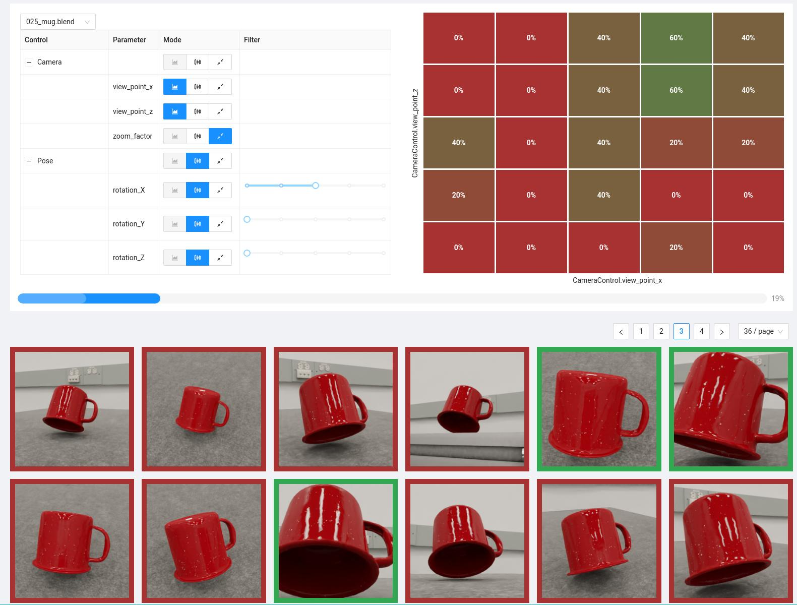
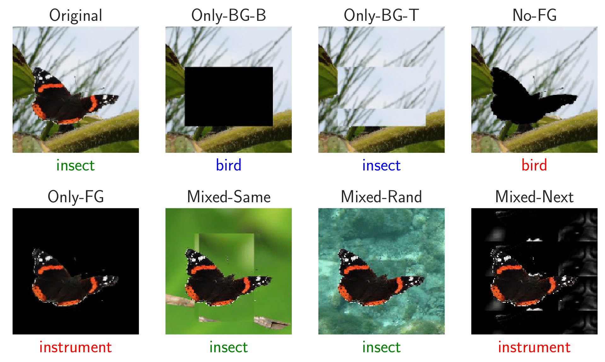
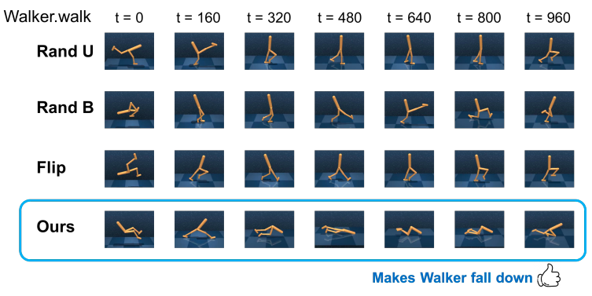
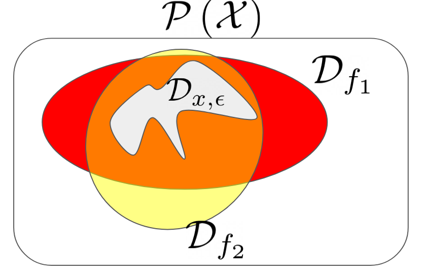
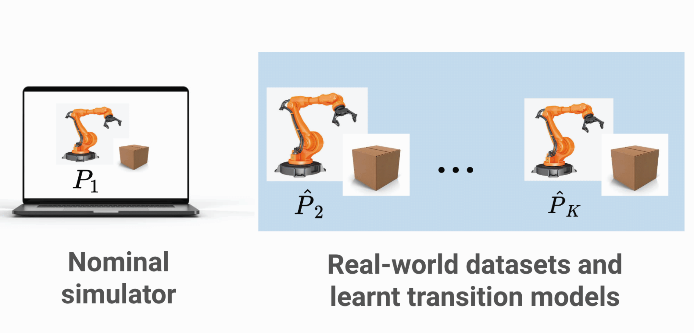
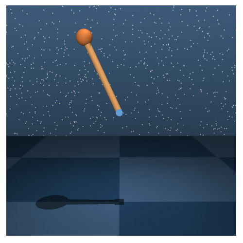

|

|
3DB: A Framework for Debugging Computer Vision Models
Guillaume Leclerc, Hadi Salman, Andrew Ilyas, Sai Vemprala, Logan Engstrom, Vibhav Vineet, Kai Xiao, Pengchuan Zhang, Shibani Santurkar, Greg Yang, Ashish Kapoor, Aleksander Madry
Preprint, 2021
We introduce 3DB: an extendable, unified framework for testing and debugging vision models using photorealistic rendererers. We demonstrate, through a wide range of use cases, that 3DB allows users to discover vulnerabilities in computer vision systems and gain insights into how models make decisions. 3DB captures and generalizes many robustness analyses from prior work, and enables one to study their interplay. Finally, we find that the insights generated by the system transfer to the physical world.
We release 3DB as a code library, along with guides and documentation.
|
|

|
Noise or Signal: The Role of Image Backgrounds in Object Recognition
Kai Xiao, Logan Engstrom, Andrew Ilyas, Aleksander Madry
Proceedings of the International Conference on Learning Representations (ICLR), 2021
Backgrounds are an established source of correlation between images and their labels in object recognition. We thus want to understand better how current state-of-the-art classifiers rely on image backgrounds. We create and use a custom ImageNet-based dataset to investigate the extent to which models rely on backgrounds, and the progression of this influence over time.
|
|

|
Toward Evaluating Robustness of Deep Reinforcement Learning with Continuous Control
Tsui-Wei Weng, Krisnamurthy (Dj) Dvijotham, Jonathan Uesato, Kai Xiao, Sven Gowal, Robert Stanforth, Pushmeet Kohli
Proceedings of the International Conference on Learning Representations (ICLR), 2020
We study the problem of continuous control agents in deep RL with adversarial attacks and propose the first two-step attack algorithm based on learned model dynamics. Extensive experiments on various MuJoCo domains (Cartpole, Fish, Walker, Humanoid) demonstrate that our proposed framework is much more effective and efficient than model-free based attacks baselines in degrading agent performance and in driving agents to unsafe states.
|
|

|
A Framework for Robustness Certification of Smoothed Classifiers using f-divergences
Krisnamurthy (Dj) Dvijotham, Jamie Hayes, Borja Balle, Zico Kolter, Chongli Qin, Andras Gyorgy, Kai Xiao, Sven Gowal, Pushmeet Kohli
Proceedings of the International Conference on Learning Representations (ICLR), 2020
Past work on randomized smoothing, which can provide provable guarantees on the robustness of models, has focused on restricted classes of smoothing measures or perturbations (like Gaussian or discrete) and has only been able to prove robustness with respect to simple norm bounds. In this paper we introduce a general framework for proving robustness properties of smoothed machine learning models in the black-box setting.
|
|

|
Data-Driven Robust Reinforcement Learning for Continuous Control
Yuanyuan Shi, Kai Xiao, Daniel J. Mankowitz, Rae Jeong, Nir Levine, Sven Gowal, Timothy Mann, Todd Hester
NeurIPS workshop on Safety and Robustness in Decision Making, 2019
We focus on learning RL policies that are robust to perturbations in the environment dynamics, which we refer to as model misspecification. The motivation is the case where we have access to a (possibly inaccurate) simulator and real world data. We propose Data-Driven Robust Maximum a-posteriori Policy Optimization (DDR-MPO), which first learns transition models with datasets collected from different perturbed environments, corresponding to the real world systems, and then uses these models along with the provided simulator to learn a robust policy.
|
|

|
Learning Neural Dynamics Simulators with Adversarial Specification Training
Kai Xiao, Sven Gowal, Todd Hester, Rae Jeong, Daniel J. Mankowitz, Yuanyuan Shi, Tsui-Wei Weng
NeurIPS workshop on Safety and Robustness in Decision Making, 2019
Learning an accurate dynamics simulator is important for effective model-based reinforcement learning (RL). Often, we have prior knowledge about the dynamics models we are trying to learn (e.g., physical laws like axes of symmetry must be respected). We focus on learning dynamics models that incorporate prior knowledge as model specifications (i.e., mathematical invariances that always hold true), and we enforce these specifications via adversarial training. Using specifications improves sample complexity and generalization.
|

|
Training for Faster Adversarial Robustness Verification via Inducing ReLU Stability
Kai Xiao, Vincent Tjeng, Nur Muhammad (Mahi) Shafiullah, Aleksander Madry
Proceedings of the International Conference on Learning Representations (ICLR), 2019
This paper explores co-designing neural networks to be both robust and easily verifiable. The paper identifies two key properties of neural networks that make it more amenable to verification - weight sparsity and ReLU stability - and describes regularization methods to achieve these goals during training without significantly hurting the neural network's accuracy. These techniques can be used in conjunction with any standard training procedure, and they allows us to train provably robust networks for MNIST and CIFAR-10.
|

|
Evaluating Robustness of Neural Networks with Mixed Integer Programming
Vincent Tjeng, Kai Xiao, Russ Tedrake
Proceedings of the International Conference on Learning Representations (ICLR), 2019
This paper leverages mixed integer linear programs to verify the robustness of neural networks in a speed that is two to three orders of magnitude quicker than the previous state-of-the-art. The computational speedup is achieved through tight formulations for non-linearities, as well as a novel presolve algorithm that makes full use of all information available. This allows us to verify the robustness of larger convolutional networks, and determine, for the first time, the exact adversarial accuracy of an MNIST classifier to norm-bounded perturbations.
|

|
Cookie Clicker
Erik D. Demaine, Hiro Ito, Stefan Langerman, Jayson Lynch, Mikhail Rudoy, Kai Xiao
Oral Presentation at JCDCG^3, 2017
Cookie Clicker is a popular online incremental game where the goal of the game is to generate as many cookies as possible. In the game you start with an initial cookie generation rate, and you can use cookies as currency to purchase various items that increase your cookie generation rate. In this paper, we analyze strategies for playing Cookie Clicker optimally. While simple to state, the game gives rise to interesting analysis involving ideas from NP-hardness, approximation algorithms, and dynamic programming.
|

|
Online Algorithms Modeled After Mousehunt
Jeffrey Ling, Kai Xiao, Dai Yang
In this paper we study a variety of novel online algorithm problems inspired by the game Mousehunt. We consider a number of basic models that approximate the game, and we provide solutions to these models using Markov Decision Processes, deterministic online algorithms, and randomized online algorithms. We analyze these solutions' performance by deriving results on their competitive ratios.
|


 I’m currently a fifth-year PhD student at MIT CSAIL, fortunate to be advised by Aleksander Madry and a member of the Madry Lab. I received my B.S. from MIT in Mathematics and Computer Science and completed my M.Eng Thesis at MIT CSAIL on Cookie Clicker under the guidance of Erik Demaine.
I’m currently a fifth-year PhD student at MIT CSAIL, fortunate to be advised by Aleksander Madry and a member of the Madry Lab. I received my B.S. from MIT in Mathematics and Computer Science and completed my M.Eng Thesis at MIT CSAIL on Cookie Clicker under the guidance of Erik Demaine.